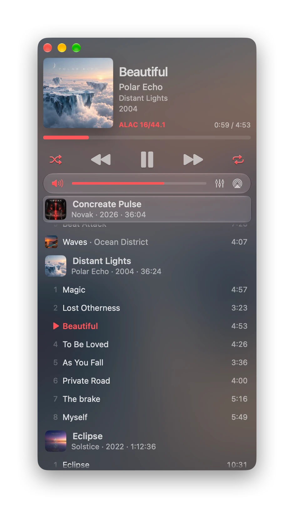

Guides › Mac
How to play FLAC files on a Mac
Updated November 2026
Short answer: The Music app on the Mac doesn't play FLAC files. For a single song, select it in the Finder and press Space. For whole albums, open them in a lossless player such as Airy: drag the folder in and press play, gapless and in the file's full quality.
Why the Music app won't play FLAC
macOS can decode FLAC: Apple added it to its own audio engine years ago. But the Music app only takes the formats of Apple's own store, so FLAC files can't be added to its library. Converting them to ALAC works, but it takes time and doubles your music folder.
Three ways to play FLAC on a Mac
- Quick Look: select a FLAC file in the Finder and press Space. Good for checking one song, not for listening to an album.
- QuickTime Player: right-click the file and choose Open With > QuickTime Player. It plays one file at a time, with no playlist.
- A lossless music player: made for whole albums and playlists. Airy is one, built only with Apple's own audio engine.
Play FLAC with Airy
- Install Airy from the Mac App Store and open it.
- Drag a folder or FLAC files into the window, or click + (⌘O). CUE sheets and playlists work too.
- Double-click a song. Albums play gapless, and the player shows each file's real format, such as FLAC 24/96.

Airy plays the files where they are and never changes them. No library to import, no account and no streaming.
Airy for Mac
A native, lossless audio player for macOS 26 and later. Free to download, every upgrade feature free for 14 days.
Frequently asked questions
Is FLAC better than MP3?
Yes. FLAC is lossless: it keeps every bit of the original recording, while MP3 throws some of it away to make the file smaller. The sound is the same as the CD or the studio master.
Do I need to convert FLAC to ALAC for my Mac?
No. Both are lossless and sound the same. Convert only if you want the songs in the Music app or on an iPhone through it.
Can a Mac play hi-res FLAC, like 24-bit / 96 kHz?
Yes. macOS plays it in full resolution. Airy shows the format of the playing file, so you can see it is really 24/96.